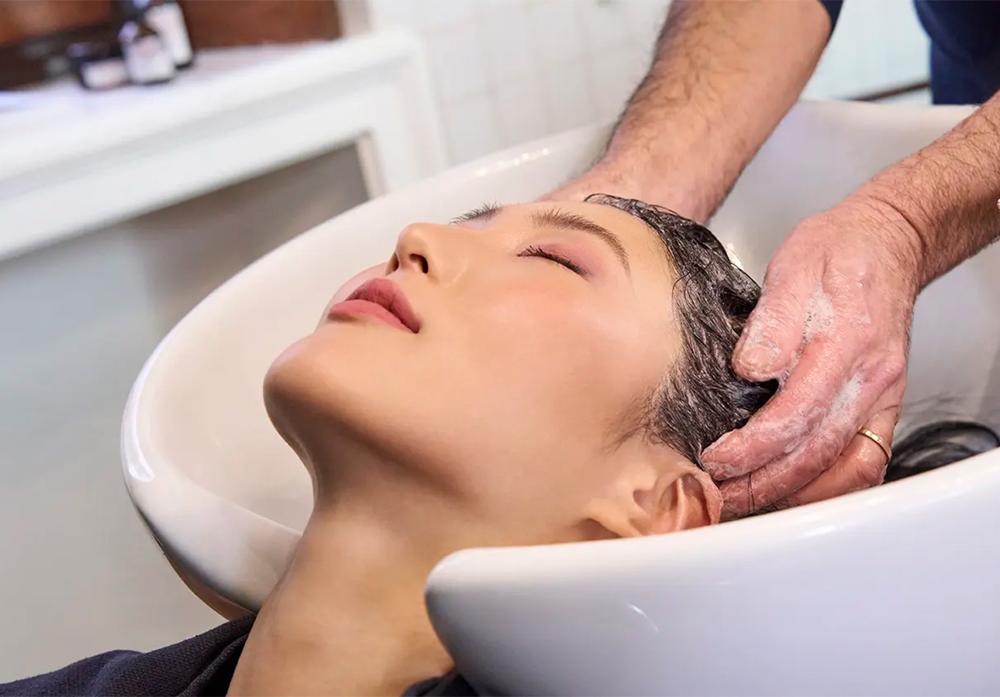

Estos tratamientos restauran la humedad, mejoran la textura y aportan brillo al cabello. Son ideales para cabellos secos, maltratados o con falta de vitalidad.
🔹 Hidratación profunda: Nutre la fibra capilar desde el interior, evitando la sequedad y la fragilidad.
🔹 Mascarillas nutritivas: A base de aceites naturales, proteínas y vitaminas para revitalizar el cabello.
🔹 Ampollas capilares: Tratamientos concentrados de rápida absorción que reparan el cabello en minutos.
🔹 Tratamiento con ácido hialurónico: Restaura la elasticidad y evita el encrespamiento.
🔹 Baño de crema: Proporciona nutrición intensa y repara las puntas abiertas.
🔹 Aceites esenciales (argán, coco, almendras, ricino): Nutren el cabello y aportan suavidad.
🔹 Tratamientos con manteca de karité: Para cabellos extremadamente secos y sin vida.
Ideales para cabellos dañados por procesos químicos, uso de calor o factores ambientales.
🔹 Botox capilar: Restaura la fibra capilar, elimina el frizz y aporta brillo sin alterar la estructura del cabello.
🔹 Tratamiento de queratina: Rellena la fibra capilar, fortalece el cabello y reduce el encrespamiento.
🔹 Nanoplastia: Tratamiento sin formol que alisa el cabello mientras lo repara.
🔹 Tratamiento con colágeno: Aporta elasticidad, brillo y resistencia al cabello debilitado.
🔹 Plástica capilar: Reestructura la fibra capilar con un efecto de brillo espejo.
🔹 Tratamiento de proteínas: Repara la estructura capilar, ideal para cabellos quebradizos y débiles.
🔹 Sellado térmico: Cierra la cutícula del cabello para evitar la pérdida de hidratación.
Estos tratamientos controlan el volumen, eliminan el frizz y facilitan el peinado.
🔹 Alisado brasileño: Con queratina y aceites naturales para reducir el frizz sin dañar la fibra capilar.
🔹 Alisado japonés: Técnica química que deja el cabello completamente liso de manera permanente.
🔹 Alisado con ácido tánico o enzimático: Alternativa natural sin químicos agresivos.
🔹 Exoplastia capilar: Alisado sin formol que deja el cabello suave y manejable.
🔹 Desrizante capilar: Relaja la estructura del cabello rizado o afro para alisar de forma prolongada.
🔹 Tratamiento antifrizz con aceite de argán: Suaviza y nutre el cabello, controlando el encrespamiento.
Dirigidos a personas con cabello débil, quebradizo o con problemas de caída.
🔹 Mesoterapia capilar: Inyecciones de vitaminas y minerales para fortalecer el folículo capilar.
🔹 Minoxidil: Estimula el crecimiento del cabello y combate la alopecia.
🔹 Plasma rico en plaquetas (PRP): Tratamiento con factores de crecimiento para regenerar el cabello.
🔹 Biotina en ampollas: Fortalece el cabello desde la raíz y estimula su crecimiento.
🔹 Tratamiento con cafeína: Estimula la circulación sanguínea en el cuero cabelludo.
🔹 Shampoo con romero y menta: Aumenta el flujo sanguíneo y promueve el crecimiento capilar.
Soluciones para afecciones como caspa, dermatitis seborreica o cuero cabelludo graso.
🔹 Peeling capilar: Limpieza profunda para eliminar impurezas y residuos de productos.
🔹 Tratamiento anticaspa: Shampoos y lociones con ketoconazol, zinc o ingredientes naturales como el aloe vera.
🔹 Reguladores del cuero cabelludo graso: Controlan la producción de sebo sin resecar el cabello.
🔹 Tratamientos calmantes para cuero cabelludo sensible: Con manzanilla, lavanda y otros agentes antiinflamatorios.
🔹 Tratamientos para dermatitis y psoriasis: Formulados con ingredientes médicos como el ácido salicílico o sulfuro de selenio.
💖 Cabello seco: Mascarillas con aceites naturales, manteca de karité y tratamientos de hidratación profunda.
💖 Cabello graso: Peeling capilar, shampoos purificantes y lociones reguladoras de sebo.
💖 Cabello teñido: Tratamientos con colágeno, queratina y productos sin sulfatos para prolongar el color.
💖 Cabello fino: Ampollas fortalecedoras y proteínas para dar volumen y resistencia.
💖 Cabello rizado: Hidratación intensa, aceites naturales y tratamientos antifrizz.
✔ No lavar el cabello con agua caliente, ya que reseca el cuero cabelludo.
✔ Evitar el uso excesivo de planchas y secadores, aplicar protector térmico antes.
✔ Recortar las puntas cada 2-3 meses para evitar las puntas abiertas.
✔ Utilizar productos sin sulfatos ni parabenos, especialmente en cabello teñido.
✔ Masajear el cuero cabelludo para estimular la circulación sanguínea.
✔ Evitar lavar el cabello todos los días, ya que puede eliminar los aceites naturales esenciales.
✔ Usar fundas de almohada de satén o seda para reducir el frizz y la rotura del cabello.
🌿 Tratamientos capilares orgánicos: Con ingredientes naturales libres de químicos agresivos.
🔥 Hair Botox Express: Versión rápida del botox capilar para obtener resultados inmediatos.
💎 Cristalización capilar: Para lograr un brillo extremo en cabellos teñidos o apagados.
🌸 K-Beauty Hair Treatments: Inspirados en la cosmética coreana, con colágeno, proteínas y fórmulas innovadoras.
💆♀️ Masajes capilares con aceites esenciales: Estimulan el crecimiento y mejoran la salud del cuero cabelludo.
🎀 Hair Cycling: Alternar productos y tratamientos para evitar la saturación del cabello con los mismos ingredientes.